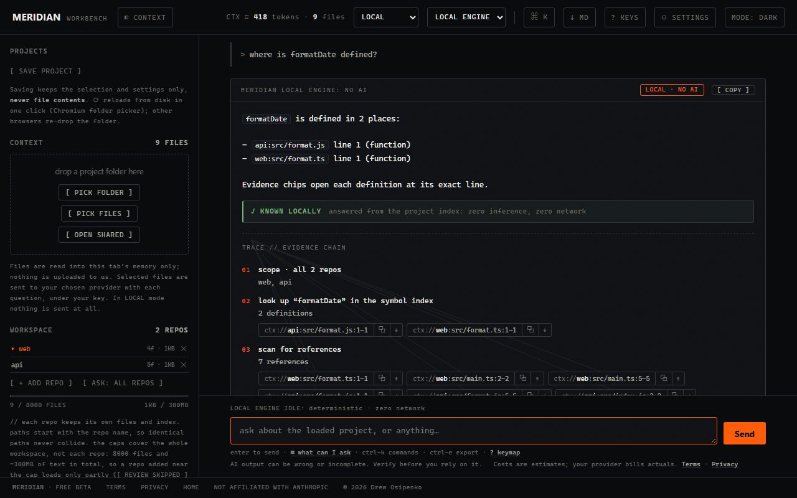
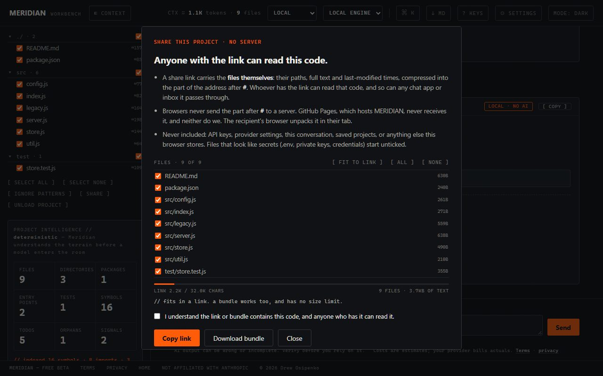
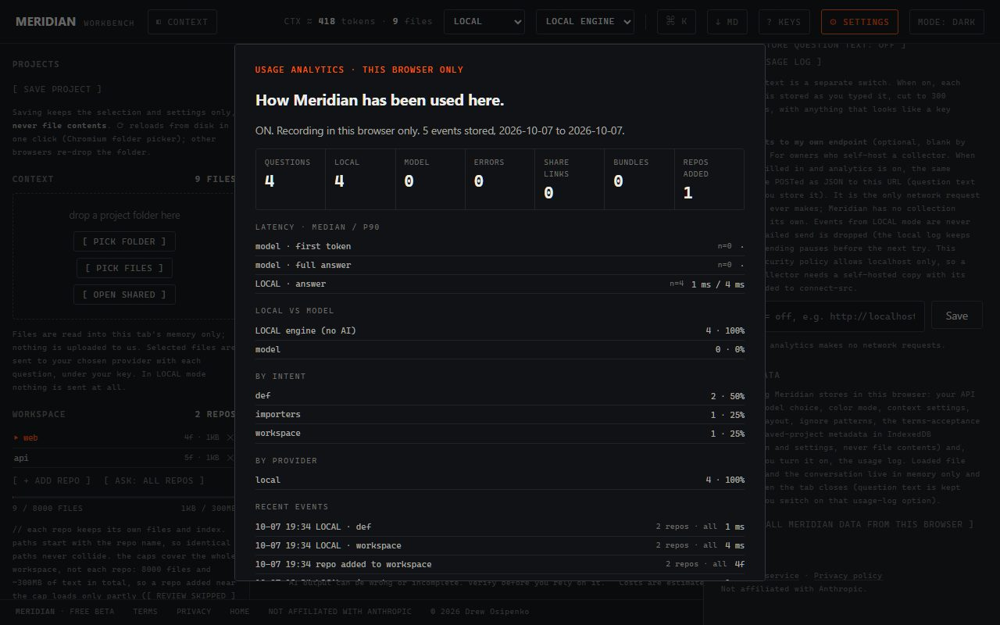

Meridian checks AI-written code without using AI to do it. Load a project and it maps every file, function and import, then shows what's off: imports that point nowhere, new circular dependencies, code the AI duplicated, files with no tests, and what a change touches. Every finding opens the exact line. Nothing leaves your browser unless you choose to ask a model.
DON'T TRUST THE AI. CHECK IT. · NO SIGNUP · NO KEY NEEDED
Coding assistants write fast and check nothing. These are the mistakes they make most, and Meridian finds each one by reading the code's structure, not by asking another model. Every finding links to the line it's about.
The AI imported a project file that doesn't exist, or got the path wrong. Meridian lists every relative import that resolves to no loaded file, with the line. (Package imports are treated as external.)
Assistants often rebuild a helper that already exists somewhere else. Meridian finds functions and classes with the same name in different files.
File A imports B, which imports A. These cause hard-to-trace bugs. Meridian walks the whole import graph and lists every loop.
Which code files have no matching test: no test file shares their name and no test imports them. Untested files that much of the project depends on also surface in the signals digest.
Name a file the AI edited and see every file that depends on it, directly or through other files. That's your review list.
A ranked digest of the three to five findings most worth your attention, plus which files appeared, disappeared or changed shape since your last session.
ALSO · never-imported files (orphans) · most-depended-on files (hubs) · environment variables read (env) · TODO/FIXME tags (todos) · definitions and references · 10 languages
WHAT IT DOESN'T CHECK (YET) · it doesn't run your code or your tests · it doesn't scan for security vulnerabilities · it doesn't prove logic is correct. It checks structure: what exists, what connects to what, and what's missing. Use it alongside your tests and code review, not instead of them.
The checks are ordinary program logic, the same kind of analysis a linter or an IDE's "find references" does. Nothing in them guesses. Here's what happens when you load a project.
You drop a folder on the page. The browser reads the files into the tab's memory. They aren't uploaded anywhere; there's no server to upload them to. Binary files, huge files and folders like node_modules are skipped and listed.
Language-specific rules scan each file for definitions (functions, classes, types), imports, exports, tests and entry points across 10 languages. Then it resolves each import to the file it points at. The result is a graph: every file, and every connection between files.
"Which imports didn't resolve?" "Is there a loop in the graph?" "Which names are defined twice?" "Which files does nothing test?" These are exact lookups and graph walks, so the same project always gives the same answer, and each answer points at the lines it came from.
For "why" and "how should I" questions, plug in your own Anthropic, OpenAI or local model key. Meridian attaches its verified findings so the model starts from facts, and PREVIEW SEND shows the exact payload first. Answers that need a model are labelled REQUIRES MODEL REASONING; answers that don't are labelled KNOWN LOCALLY.
Screenshots of the real workbench. The workspace repos are two small samples.

MULTI-REPO WORKSPACESAdd repos to one workspace and scope a question to one repo or all of them, with the LOCAL engine or a model. Identical paths never collide, and the overview shows shared dependencies, cross-repo imports and names exported by more than one repo. Saved workspaces keep names and settings, never contents.

SHARE LINKS AND BUNDLESTick the files, and the link carries the code itself after the #, the part of an address browsers never send to a server. It goes only where you send it, and anyone holding it can read it. Big projects become a .meridian file instead. Keys and settings are never included.

OPT-IN USAGE LOGOff by default. Turned on, it keeps question kinds, provider, timings and token counts in the browser, never code, paths or keys. Question text needs a second switch. Export JSON or CSV, or send events to an endpoint you run. There is no collector of ours.
ALSO IN THE WORKBENCH · PREVIEW SEND shows the exact payload before a question goes to a model · export a session as Markdown or HTML for a ticket or a review · provider quick-switch between Anthropic, OpenAI, a local model and no AI
// GitHub Pages serves the page files. It never receives your code, your questions or your key.
The questions reviewers ask, with direct answers. You can check each point in the source and in your browser's network inspector.
Need it in writing? Send your reviewer the one-pager (it prints to one page), the privacy policy and the source.
Follow the demo link. A first visit asks you to accept the terms once, and the demo button is already focused, so that takes one click.
A small sample project loads and the LOCAL engine answers its first question. No key, no AI, nothing leaves the tab.
Try signals, broken or what breaks if I change store.js, and click an evidence chip to open the exact line. Then load a real repo.
The checks don't. Broken imports, cycles, duplicates, untested files, impact and signals are computed by ordinary program logic from a map of your code, with no model and no network. AI is an optional extra for questions that need judgement ("why is this built this way?"), and only with a key you supply. Each answer is labelled KNOWN LOCALLY or REQUIRES MODEL REASONING so you always know which one you're reading.
No. Meridian checks structure: what exists, what connects to what, and what's missing. It doesn't run your code, run your tests, scan for security vulnerabilities or prove the logic is right. Think of it as a fast first pass that tells a reviewer where to look.
Your code never reaches us: Meridian has no backend to receive it. The tab holds your files in memory until you close it. Code leaves the browser only in these cases, and you start each one:
Outside our control: what your model provider does with requests (your agreement with them covers that), and where a share link travels once you send it. The usage log never stores code. Details in the privacy policy.
A modern browser. For model answers, an API key for Anthropic, OpenAI or any OpenAI-compatible endpoint; keys stay in that browser's localStorage and go only to that provider. Or no key at all: the LOCAL engine answers questions about definitions, references, imports and structure by deterministic search, with no AI and no network. Nothing to install, no account to create.
Yes. Point the custom provider at any OpenAI-compatible server. On the hosted page that means a server on your own machine, such as LM Studio (http://localhost:1234/v1) or Ollama, with CORS enabled for this site. LM Studio ships with CORS off, and Ollama needs OLLAMA_ORIGINS set. For a model behind your company's gateway, or a provider endpoint in a specific region, host your own copy of the static files and add that address to the security policy. The user guide covers both setups.
Anyone who has it. The link carries the files you ticked, compressed, in the part after #. Browsers don't send that part to any server, so GitHub Pages and we never see it, but the chat app or inbox you paste it into stores it like any message. There is no server, so a link can't be revoked or expired. Treat it like sending the files. A link holds up to 32,000 characters, so a bigger project goes in a .meridian file instead. A shared project opens read-only, in the recipient's tab, and nothing is saved.
Not for us. This site runs no analytics and sets no cookies. The workbench has an optional usage log for you: off by default, stored in your browser, exportable as JSON or CSV. It records question kinds, provider, timings and token counts, never code, file paths or keys, and stores question text only if you turn on a second switch. For team-wide numbers, it can send the same events to an endpoint you run (on the hosted page, one on localhost).
Meridian is free during the beta. Model usage is billed by your provider at their rates; the workbench shows a running cost estimate and supports a session spend limit. Use a key with a spend cap.
Check them; that's what the trace is for. Evidence chips open the cited file at the cited lines, so verifying takes seconds. LOCAL answers come straight from the index and say when a question needs a model instead. Model output can still be wrong, and if a trace can't be parsed, the answer says so.
Up to 8,000 files by default, 512 KB per file and about 300 MB of text in the tab, counted across every repo in a workspace. Change the file count under FILE CAP in settings. Anything skipped is counted and listed under REVIEW SKIPPED, and you can pull single files back in. For large projects, SMART mode sends a project map plus the most relevant files packed into a token budget, in place of everything. Token figures are estimates that run high on purpose, and your provider bills the actual counts.
Point it at a repo your assistant has been working in. Free during the beta. No signup, no account, nothing to install, and the full source is on GitHub, so your reviewers can read it before you run it.
For your security reviewer: the one-pager. Questions or bug reports: drewosipenko@gmail.com